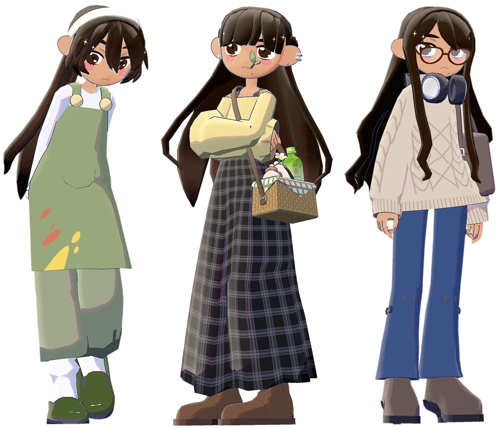

hi there!
about me
💼 i'm mrinal, a senior software engineer based in the DMV. i have a bachelor's degree in
computer science from virginia tech (2020) and just recently completed a masters in computer science
with an artificial intelligence specialization from georgia tech (2025) while working full-time.
i work on the integration of new IoT protocols into smart home platforms, and have led two successful
large-scale products from ideation to launch — these experiences taught me a great deal
about product development, cross-team collaboration, and leadership.
🎪 when i was a kid, the internet was a playground for creativity and exploration, aspects which i feel have been
somewhat lost in the modernization and standardization of the web.
i want to bring some of that magic back by applying my passion for the intersection of art and technology
to build fun and whimsical digital experiences.
this site is a collection of projects, learnings, and thoughts in those spaces!
🎨 outside of work, i enjoy drawing, games, collecting trinkets, baking, and music.
i used to draw a lot when i was younger, but somewhere along the road, i just stopped pursuing it.
during the pandemic though, i started @atsumr_ (15K on Tiktok
and 1.8K on Twitter), which reignited that passion for art (hence the site name).
i lost some momentum during grad school, but i'm getting back into it again and hoping to continue growing my online artist identity. ☺︎
🥂 thanks for stopping by — i hope you find something here that sparks your interest!
